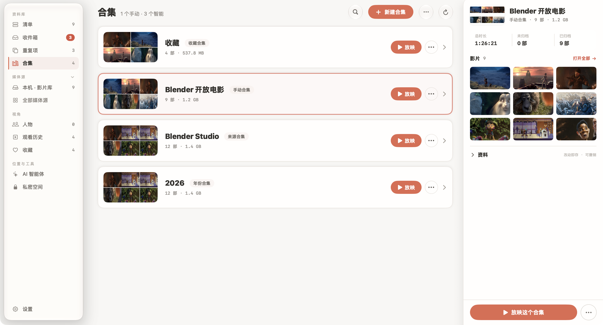

Nsurator 使用攻略
把影片收好，
把时间留给观看。
从第一面海报墙，到一场不被打断的电影夜。跟着真实界面，把常用功能一步步用起来。
找到你需要的攻略从你想做的事开始
观看、整理、连接。每篇都配有实际操作界面。
6 篇攻略





暂时没有匹配的攻略
试试“海报”“播放”或“备份”，也可以回到全部攻略。
开始之前，
你可能想知道。
几个经常会遇到的小问题。
没有 TMDB 密钥，也能使用吗？
可以。你可以播放自己的影片，也可以通过文件名、本地 NFO 和图片建立资料。需要联网补充片名、简介和海报时，再填写自己的 TMDB 密钥。
查看资料来源的区别 →备份包里包含电影文件吗？
不包含。资料备份保存整理成果，例如海报、合集和影视资料。影片文件夹需要单独备份，搬家时也需要一起带走。
了解备份范围 →为什么没有继续观看记录？
先到「设置 → 外观与隐私」检查观看记录是否开启。清除记录会影响续播；已经达到“算看完”范围的影片，也会清掉续播点。
检查续播设置 →AI 工具会直接修改影片库吗？
取决于你开放的权限。可以先只开启读取，确认查询结果，再考虑播放控制或资料修改。AI 接口始终排除私密空间。
了解 AI 权限 →